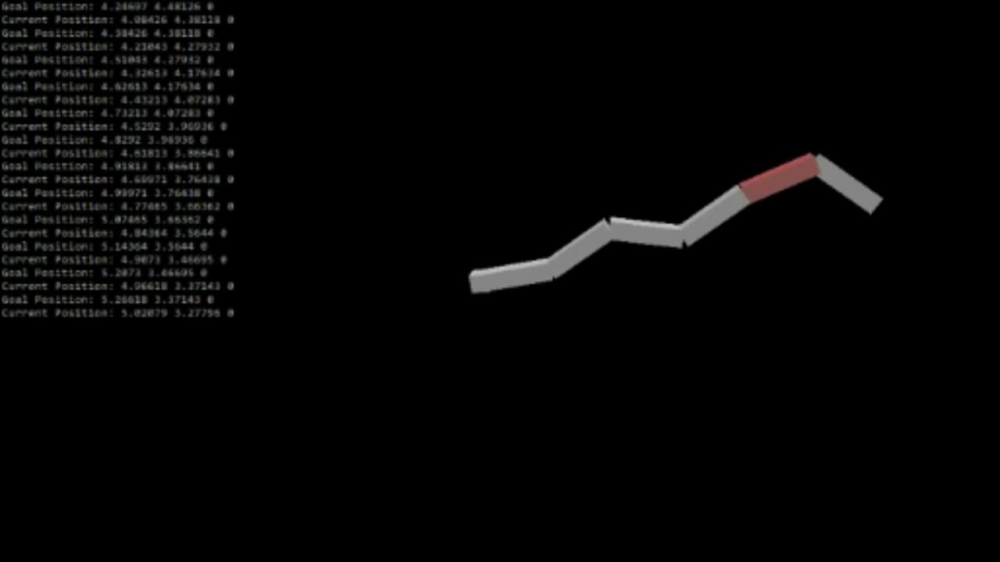
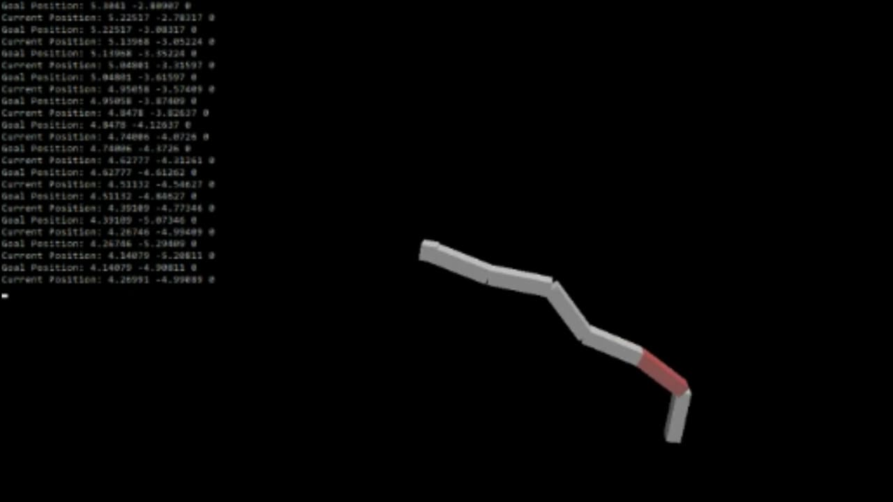
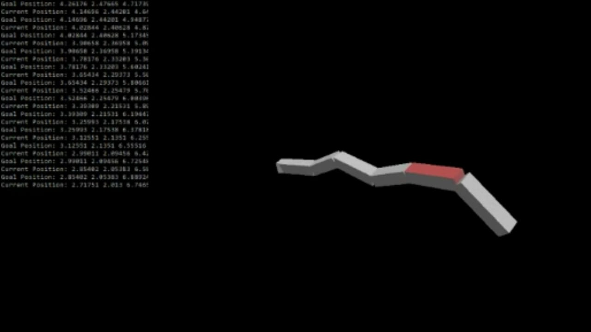
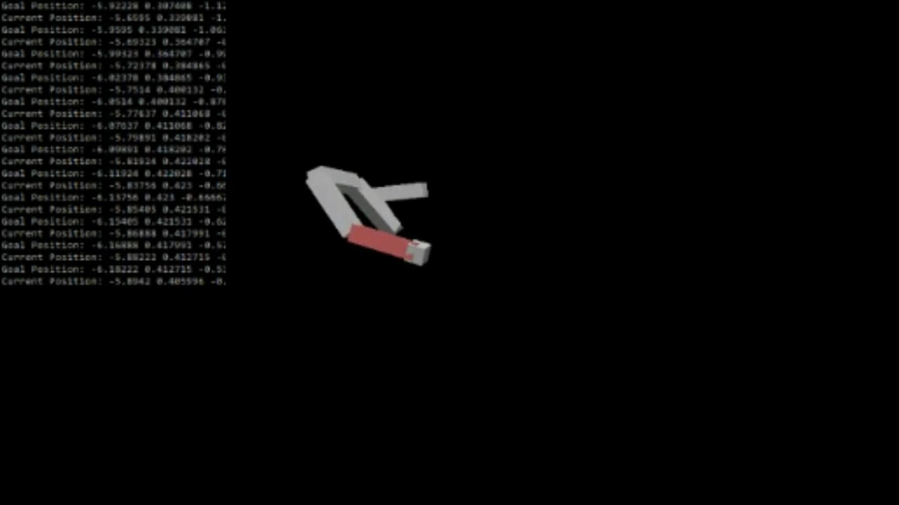
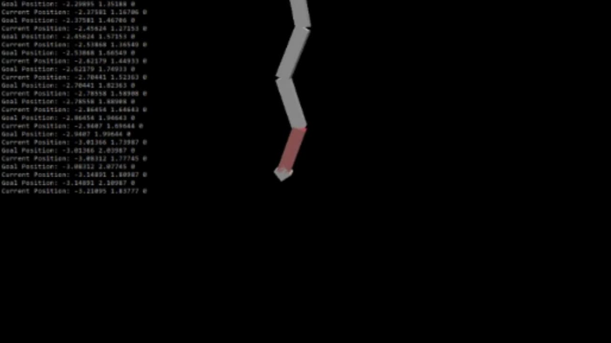
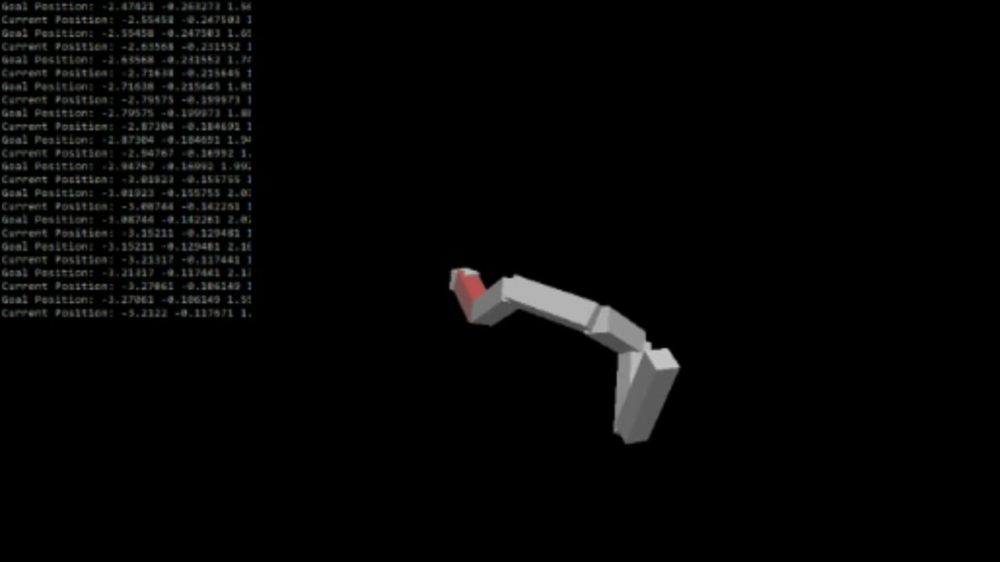

Inverse Kinematics
C++ OpenGLThis project was the final assignment for UCSD's Computer Animation class. For this project, I implemented inverse kinematics on a chain of six links. Each link has 3 rotational DOFs and are represented by boxes/rectangular prisms.






Goals for this Project:
- Create a chain of 5 or more links, each with at least 1 rotational DOF
- Implement controls to change the x, y, and z coordinates of the goal position and display the goal position.
- Use the Jacobian transpose approach to calculate the positions of each joint.
Keyboard Key Functions:
- a: Go to the previous DOF for the goal position(z → y → x)
- d: Go to the next DOF for the goal position (x → y → z)
- j: Go to the previous joint
- k: Go to the next joint
- s: Decrease the value of the current DOF
- w: Increase the value of the current DOF
Mouse Functionality:
- Hold the left mouse button and move the cursor left or right to rotate the camera around the center of the world.
- Hold the right mouse button and move the cursor left or right to change the distance between the camera and the origin.